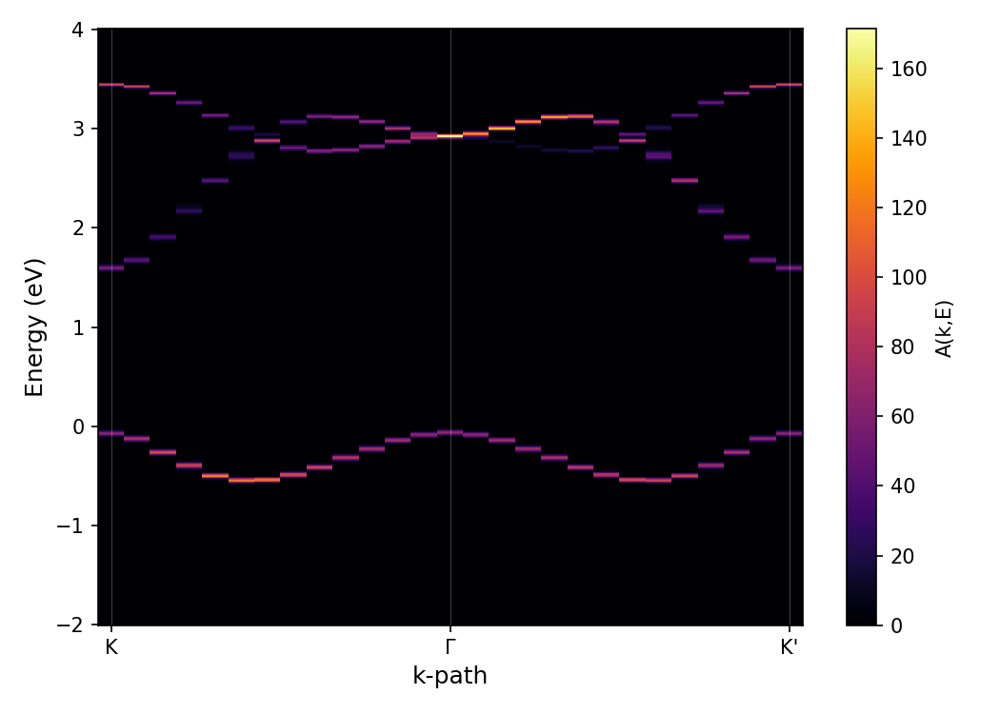

Spectral Function (ARPES)
The single-particle spectral function¶
KITE can compute the momentum-resolved single-particle spectral function, \(A(\mathbf{k},E)\), the quantity of relevance to angle-resolved photoemission spectroscopy (ARPES). Physically, \(A(\mathbf{k},E)\) measures the probability of finding an electron (or hole) with crystal momentum \(\mathbf{k}\) at energy \(E\), and is formally the diagonal matrix element of the spectral operator in a Bloch-momentum basis,
For a non-interacting, disorder-free crystal this reduces to a sum of delta functions at the band energies \(E_n(\mathbf{k})\); disorder and finite lifetimes broaden these into finite-width peaks.
How KITE computes it¶
\(A(\mathbf{k},E)\) is obtained with the same Chebyshev/KPM machinery described in Background: Spectral Methods, except that the initial state fed into the recursion is a normalized Bloch-like plane wave rather than a random vector (as for a full trace) or a single real-space site (as for the LDOS):
where \(\mathbf{r}\) runs over unit cells, \(\alpha\) runs over orbitals within the unit cell (at position
\(\boldsymbol{\tau}_\alpha\)), and \(w_\alpha\) is a user-supplied per-orbital weight. This is why ARPES is
classified, alongside the LDOS, as a "diagonal matrix element" calculation in Section 0
rather than a full-trace one: num_random plays no role, and the target function is evaluated at
one specific \(\mathbf{k}\)-point at a time.
What each part of the workflow does¶
- The Python interface (
calculation.arpes()) specifies the \(\mathbf{k}\)-path, per-orbital weights \(w_\alpha\), and the number of Chebyshev moments, and writes them into the HDF5 file. - KITEx reads that file, builds the plane-wave state \(|\mathbf{k}\rangle\) for each requested \(\mathbf{k}\)-point, and computes the Chebyshev moments of \(A(\mathbf{k},E)\), writing them back into the same file.
- KITE-tools (
--ARPES) reconstructs \(A(\mathbf{k},E)\) from those moments over a chosen energy window and kernel, and optionally applies a simplified photoemission matrix-element weighting based on the incident light's wave vector and frequency (-V,-O) and on temperature/Fermi energy (-T,-F). Passing-Sskips that weighting and outputs the bare spectral function instead — see the post-processing documentation for the full flag reference.
Defining the k-path¶
The k_vector list is built with Pybinding's pb.results.make_path(), using
Cartesian (physical-unit) k-space coordinates — the same units as lattice.reciprocal_vectors().
KITE converts these internally into fractional reciprocal-lattice coordinates for storage and internal use;
this conversion is automatic and should not be done by hand, and the k-points reported in KITE-tools'
output file are converted back to the same Cartesian units that were used as input.
A robust, orientation-independent way to obtain high-symmetry points is to read them directly off
lattice.brillouin_zone(), which computes the actual Brillouin zone polygon for whatever lattice
vectors were used, rather than reusing a formula (e.g. K = (b1 - b2) / 3) derived for a specific
lattice orientation:
For lattices whose electronic structure has only 3-fold (rather than full 6-fold) rotational symmetry —
such as monolayer TMDs, where the d-orbital hopping physics reduces the symmetry despite the underlying
triangular Bravais lattice being 6-fold symmetric — adjacent corners of the Brillouin zone correspond to
the two inequivalent valleys K and K′. A path intended to compare both valleys should include both, e.g.
bz[0] and bz[1].
The weight parameter¶
weight assigns one value per orbital (not per named sublattice — for a
lattice with several single-orbital sublattices these coincide, but not in general), and can be complex.
Complex weights are useful for projecting onto specific orbital combinations — for example,
\(d_{xy} \pm i\, d_{x^2-y^2}\) combinations correspond to states of definite orbital angular momentum. The
length of weight must equal the total number of orbitals in the lattice.
Worked example: monolayer MoS₂¶
The example below computes \(A(\mathbf{k},E)\) along \(K \to \Gamma \to K'\) for a monolayer MoS₂, using the nearest-neighbor 3-band tight-binding model (three \(d\)-orbitals per metal site: \(d_{z^2}\), \(d_{xy}\), \(d_{x^2-y^2}\)) of Liu et al.1 The full script is available here.
Lattice¶
Each of the three \(d\)-orbitals is added as its own sublattice, all at the same position within the unit cell, connected by explicit per-orbital-pair hoppings built from the tabulated tight-binding parameters:
Settings and calculation¶
Gamma = np.array([0, 0])
K = np.array([4 * np.pi / (3 * a), 0])
Kprime = np.array([2 * np.pi / (3 * a), 2 * np.pi / (a * np.sqrt(3))])
k_path = pb.results.make_path(K, Gamma, Kprime, step=0.1)
configuration = kite.Configuration(
divisions=[2, 2],
length=[128, 128],
boundaries=["periodic", "periodic"],
is_complex=True,
precision=1,
spectrum_range=[-2, 4])
calculation = kite.Calculation(configuration)
calculation.arpes(k_vector=k_path, num_moments=512, weight=[1, 1, 1], num_disorder=1)
Post-processing¶
This computes the bare spectral function (-S) with the Jackson kernel.
Result¶

The valence-band maximum sits at K (and, equivalently, K′), separated by a gap from the conduction bands, consistent with MoS₂'s semiconducting character in this simplified nearest-neighbor model.
Example
Get more familiar with KITE: reproduce this figure, then try adding a real photoemission matrix element
(drop -S and supply -V/-O), or compare the two orbital-angular-momentum
weightings weight=[0, 1, 1j] and weight=[0, 1, -1j] to see how the spectral weight
contrasts between the K and K′ valleys.
-
G.-B. Liu, W.-Y. Shan, Y. Yao, W. Yao, and D. Xiao, Phys. Rev. B 88, 085433 (2013); erratum Phys. Rev. B 89, 039901 (2014). ↩